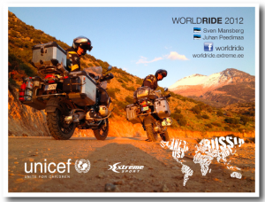
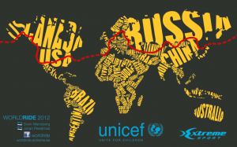

Teine päev
kommentaare poleMinskis ja netti pole. Edasi Musta mere poole. Kohe peaks teised passid saama, siis näeme viisasid ja kuupäevi ja teeme järgmiste päevade plaani, et kuidas Gruusiasse jne.
Esimene päev
kommentaare poleKogu äramineku üritus läks plaanimatult suureks. Nüüd vist reisi ära jätta enam ei sobi. Svenil käis krõks juba ära aga mina ei saa veel midagi aru. Täna olime veel Tartu kodus. Vahest on enne Soomeminekut ka suurem reisiärevus olnud. Loodetavasti saabub erilisem tunne peale Haanjast väljasõitu. Hommikul käime läbi Tartu raeplatsilt, kus Uppsala ja Tartu linnapead meile sõnad peale loevad. Hiljem sõidame läbi Haanja koolist. Perega lahkuminekust ei taha mõeldagi. Üks tütreke pressib igal võimalikul juhul pisarat. Täna võiks jõuda kuskile Valgevene piiri äärde. Ägedalt palju sõpru ja toetajaid on.
Minek.
kommentaare poleWorldride start antakse kolmapäeval, 25. aprillil kell 12.00 UNICEF Eesti esinduse juurest (Auna 6, Tallinn). Sõitjad ja UNICEFi esindajad on kohal pool tundi enne starti.
Stardime 2 nädala pärast. Start is in 2 weeks.
kommentaare poleEttevalmistus on lõpusirgel. Praeguste plaanide kohaselt stardime 24 või 25ndal aprillil. Praegu on puudu veel mõned viisad, tsiklijubinad, digikaardid jne aga ise oleme olemas ja ei ole loobunud.
Tänud/thanks
kommentaare polePere ja sõbrad/family and friends,
Ain Härmson, Arne Kukin, Artur Sinilill, Biker24, Dr Argo Parts, Dr Toomas Tein, Erno Kaasik, Ero K, Hannes Hanso, Irja Nikeolajeva, Jaanus Torm, Kalle Tihemets, Leida Lepik, Mariin Ratnik, Marion Vahuri, Mart Lajal, Mareten Soots, Mati Alarmi, Mereli Kivi, Motohoov, Märt Karu, Roini Gigiberia, Taavi Tiirik, Tarmo Kinkar, Toomas Palu, Toomas Pärna.
Aafrika proovireis
kommentaare poleVeebruaris 2012 tegime proovireisi, mille päevikuid saab lugeda ja teekonnakaarti vaadata siit.
Fotod reisist koos asukohainfoga on nähtavad siin.
Kontakt
kommentaare poleSven Mansberg
Juhan Peedimaa
+3725036117
Backofficce:
Ain Härmson
Tel +3725155700
penny(at)teamvosa.ee
WorldRide kirjeldus
kommentaare poleKes, mis ja miks.
Veebruaris 2012 alustavad mootorratastel ümbermaailmareisi Sven Mansberg ja Juhan Peedimaa. Ümbermaailmareis toimub UNICEF Eesti Rahvuskomitee (United Nations Children´s Fund UNICEF Estonian National Committee) egiidi all. Tahame anda oma vabathtliku panuse UNICEFi sõnumi levitamiseks ja potensiaalsete annetajate innustamiseks. Reisi motoks on “Life is a gift”. Oma teekonnal külastatame UNICEFi kohalikke esindusi.

Motomatka ettevalmistus on kestnud üle aasta ning muuhulgas läbisime 2012 aasta alguses proovireis Aafrikas, Marokos. Ettevalmistuse käigus oleme lisaks erinevatele koolitustele konsulteerinud mitmete kohalikke (Kesk-Aasia ) olusid tundvate inimestega ning tehinud palju eeltööd vähendamaks võimalust liiga keerulistesse piirkondadesse ja olukordadesse sattuda. Ettevõtmisest plaanib teha dokumentaalfilmi Viasat gruppi kuuluv TV3. Reisi saab reaalajas jälgida aadressil worldride.extreme.ee ja www.facebook.com/Worldride

Seni oleme tööväliselt tegelenud surfamisega ning oleme TeamExtreme liikmed. Surfireiside puhul tuleb tihti lennata ning maailm võib lennates petlikult väike tunduda. Reisi üheks motiiviks on endale meelde tuletada, et see mitte nii ei ole. Teekonnal satume ilmselt suhteliselt askeetlikutesse tingimustesse, mis võiks panna igapäevastest mugavustest uuesti rõõmu tundma. Samuti on meil arvatavasti piisavalt aega üksi olla ja lihtsalt paremaks inimeseks saada.Peredega kohtume vaheaegadel, kui tsikleid transporditakse üle ookeanide.
Teekond koosneb neljast osast ja reisi kogukestvuseks on plaaneeritud natuke üle aasta:
1.Talv 2012 Proovireis Aafrika, Maroko, Hispaania. Varustuse ja vastupidavuse kontroll.
2. Kevad-suvi 2012
Aasia: Eestist Musta mereni ja edasi läbi endiste kesk-aasia liiduvabariikide Venemaa kaug-itta, Vladivostokki. Seejärel saadame tsiklid laevaga Alaskasse.
3. Sügis 2012
Ameerika. Alustades Seattlest, läbides Kanada, British Columbia ja Ameerika Ühendriigid läänerannikut pidi Kaliforniani ning ajaloolist Route66 pidi Idarannikule, Floridasse Miamisse. Laevatransport Euroopasse.
4. Kevad 2013
Itaaliast Balkanimaade kaudu Eestisse

Planeeritud teekonna täpsem info riigiti:
EESTI – Läti – Valgevene – Ukraina – Moldova – Rumeenia – Bulgaaria – Türgi – Gruusia – Aserbaidzaan – Kasahstan – Kõrgõstan – Venemaa – Mongoolia – Lõuna-Korea – Kanada – Ameerika – Maroko – Hispaania – Itaalia – Albaania – Makedoonia – Kosovo – Montenegro – Bosnia-Herzegovina – Horvaatia – Hungari – Slovakkia – Poola – Leedu – Läti – EESTI
Meediakära
kommentaare poleVikerraadio hommikuprogramm siin.
ETV Terevisioon siin
ETV Terevisiooni uudised siin alates 32 minutist.
TV3 Uudised siin. alates 22 minutist.
Raadio2 Silmad lahti siin. alates 35 minutist.
Kanal2 Reporter siin.
Tarbja24 portaal siin.
Tartu Postimees siin
Võrumaa Teataja siin
OTV Prim reportaazh Vladivostokis siin